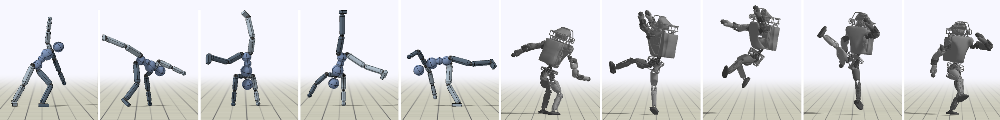

Transactions on Graphics (Proc. ACM SIGGRAPH 2018 - conditionally accepted)
Xue Bin Peng(1)Pieter Abbeel(1)Sergey Levine(1)Michiel van de Panne(2) (1)University of California, Berkeley(1)University of British Columbia

Abstract
A longstanding goal in character animation is to combine data-driven specification
of behavior with a system that can execute a similar behavior in a
physical simulation, thus enabling realistic responses to perturbations and
environmental variation. We show that well-known reinforcement learning
(RL) methods can be adapted to learn robust control policies capable of imitating
a broad range of example motion clips, while also learning complex
recoveries, adapting to changes in morphology, and accomplishing userspecified
goals. Our method handles keyframed motions, highly-dynamic
actions such as motion-captured flips and spins, and retargeted motions. By
combining a motion-imitation objective with a task objective, we can train
characters that react intelligently in interactive settings, e.g., by walking in a
desired direction or throwing a ball at a user-specified target. This approach
thus combines the convenience and motion quality of using motion clips to
define the desired style and appearance, with the flexibility and generality
afforded by RL methods and physics-based animation. We further explore a
number of methods for integrating multiple clips into the learning process
to develop multi-skilled agents capable of performing a rich repertoire of
diverse skills. We demonstrate results using multiple characters (human,
Atlas robot, bipedal dinosaur, dragon) and a large variety of skills, including
locomotion, acrobatics, and martial arts.